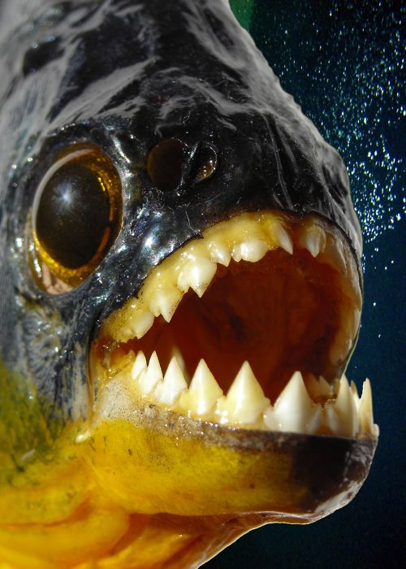

-

- Name: Piranha
- Species: Serrasalminae
- Harvest Location: South America
- Diet: A typical piranha diet consists of insects, fish, crustaceans, worms, carrion, seeds and other plant material.
- Length: 12 inches
- Name: Blobfish
- Species: Psychrolutes Marcidus
- Harvest Location: Austalia And New Zealand
- Diet: A blobfish's diet includes crustaceans - including crabs, lobsters - but also sea urchins and mollusks. They sit on the bottom of the ocean and wait for prey to come into their mouth.
- Lenggth: 12 inches
- Name: Monk Fish
- Species: Genus Lophius
- Harvest Location: North Carolina, USA
- Diet: Monkfish are opportunistic feeders, eating whatever prey is most available at the time. Larvae feed on zooplankton (tiny floating animals). Juveniles mostly eat small fish, shrimp, and squid. Adults mainly eat fish, including other monkfish, but also feed on crustaceans, mollusks, seabirds, and diving ducks.
- Length: 4 feet
- Name: Angler Fish
- Species: Teleost Order Lophiiformes
- Harvest Location: Atlantic And Artartic Ocean
- Diet: The main diet of the deep sea angler consists mainly of small fish, shrimp, like the Mantis Shrimp, small squid, turtle, and in some cases sea birds (creatures of the deep). Most of this food is eaten after it has died and sinks to the bottom of the ocean.
- Lenggth: 3.3 feet
- Name: Lump Fish
- Species: Cyclopterus lumpus
- Harvest Location: Arctic, North Atlantic, and North Pacific Oceans
- Diet: Lumpfish eat jellyfish, crustaceans, marine worms and small fish.
- Length: 30-40 cm
- Name: Asian Sheepshead Wrasse
- Species: Semicossyphus reticulatus
- Harvest Location: Korean Peninsula, China, Japan, and the Ogasawara Islands
- Diet: When they're young, sheepshead fish will eat marine worms, bryozoan 'moss animals' and pretty much anything soft-bodied they can catch in the seagrasses.
- Length: 100 cm